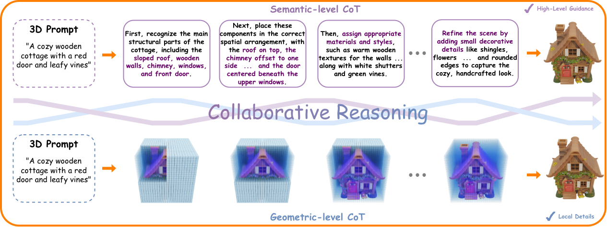
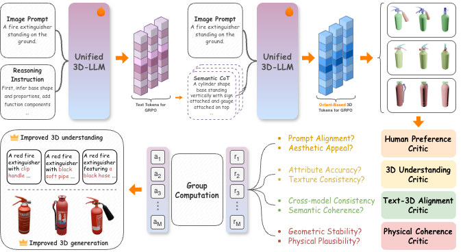
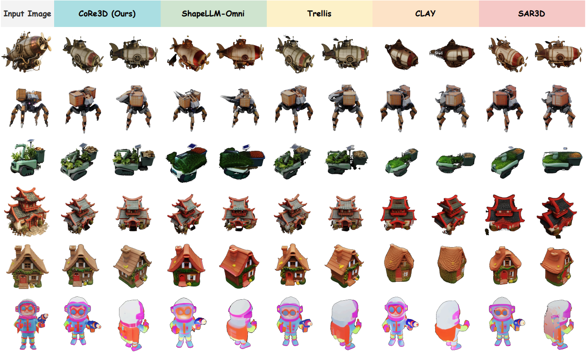
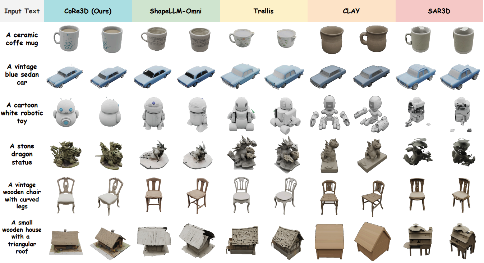

Recent advances in large multimodal models suggest that explicit reasoning mechanisms play a critical role in improving model reliability, interpretability, and cross-modal alignment. While such reasoning-centric approaches have been proven effective in language and vision tasks, their extension to 3D remains underdeveloped. CoRe3D introduces a unified 3D understanding and generation reasoning framework that jointly operates over semantic and spatial abstractions, enabling high-level intent inferred from language to directly guide low-level 3D content formation. Central to this design is a spatially grounded reasoning representation that decomposes 3D latent space into localized regions, allowing the model to reason over geometry in a compositional and procedural manner. By tightly coupling semantic chain-of-thought inference with structured spatial reasoning, CoRe3D produces 3D outputs that exhibit strong local consistency and faithful alignment with linguistic descriptions.
CoRe3DCollaborative Reasoning as a Foundation for 3D Intelligence
TL;DR
We introduce CoRe3D, a framework that couples language-based planning with geometric reasoning over localized 3D blocks. Joint reinforcement learning aligns semantic plans with geometric construction, enabling CoRe3D to infer objects from implicit descriptions and generate shapes faithful to their intended structure.
Interactive 3D Models
Drag to rotate. Scroll or pinch to zoom. Use the arrow keys when a model is focused.
Abstract
Contributions
- CoRe3D unifies semantic planning and geometric reasoning. We introduce a collaborative reasoning framework with two complementary levels: Semantic Chain-of-Thought for high-level planning and an octant-based Geometric Chain-of-Thought that realizes the plan through a spatially grounded reasoning trajectory over 3D octant tokens.
- Collaborative reasoning interprets implicit descriptive cues. The framework reasons over challenging text prompts that require inferring the correct object or interpreting an indirect description, such as identifying the Statue of Liberty from a description of a colossal copper figure holding a torch.
- 3D Co-GRPO aligns semantic plans with geometric construction. We propose a multi-critic optimization method with dense 3D-aware rewards to improve language alignment, geometric structure, and robustness by coordinating the two reasoning levels.
- CoRe3D extends from generation to reciprocal 3D understanding. The same framework supports tasks such as 3D-to-text captioning, demonstrating bidirectional understanding and generation and its potential as a scalable foundation for general 3D intelligence.
CoRe3D Method
CoRe3D couples language-based planning with reasoning over localized 3D blocks. Joint reinforcement learning aligns the semantic plan with the geometry the model constructs.
-
Semantic planning
The unified 3D-LLM expands a prompt into a plan for the object’s category, parts, spatial layout, materials, and appearance. The plan anchors the following geometric reasoning.
-
Geometric reasoning
A 3D VQ-VAE compresses 64³ voxels into 16³ latents. Eight adjacent 8-D latents form each 64-D octant token, giving 512 spatially localized tokens per object.
-
Joint optimization
3D Co-GRPO aligns both reasoning levels using four critics: human preference, 3D understanding, text–3D alignment, and physical coherence.
From semantic plans to localized 3D blocks

Joint optimization with 3D Co-GRPO

Quantitative Results
General reasoning benchmarks
Language understanding and reasoning benchmarks for vision-language and 3D models. Higher scores are better. Best results are bold; second-best results are underlined.
| Model | MMLU ↑ | PIQA ↑ | GSM8K ↑ | SIQA ↑ |
|---|---|---|---|---|
| Qwen2.5-VL-7B | 67.5 | 81.3 | 43.2 | 41.0 |
| LLaMA3.2-Vision-11B | 66.2 | 80.1 | 42.1 | 40.6 |
| LLaMA-Mesh-8B | 59.8 | 79.8 | 37.2 | 40.3 |
| ShapeLLM-Omni-7B | 64.3 | 78.9 | 55.6 | 41.5 |
| CoRe3D | 67.6 | 79.4 | 57.3 | 41.5 |
3D captioning
3D object captioning results on the Objaverse benchmark. We evaluate the model’s 3D caption capability. CoRe3D achieves state-of-the-art performance by a significant margin across all n-gram and semantic similarity metrics, demonstrating that our reasoning-driven generative training directly enhances 3D understanding. Best results are bold; second-best results are underlined.
| Model | BLEU-1 ↑ | ROUGE-L ↑ | METEOR ↑ | Sentence-BERT ↑ | SimCSE ↑ |
|---|---|---|---|---|---|
| LLaVA-13B | 4.01 | 8.18 | 13.18 | 46.97 | 48.86 |
| Qwen2.5-VL-7B | 4.05 | 7.85 | 14.23 | 48.90 | 50.86 |
| 3D-LLM | 15.11 | 17.84 | 19.22 | 42.36 | 43.58 |
| LEO | 16.98 | 20.12 | 20.91 | 48.01 | 47.25 |
| PointLLM-13B | 3.18 | 7.54 | 12.24 | 47.89 | 49.01 |
| ShapeLLM-Omni | 18.92 | 21.46 | 22.12 | 49.43 | 50.72 |
| CoRe3D | 24.02 | 26.45 | 24.98 | 51.17 | 52.79 |
3D generation
Quantitative comparison of 3D generation quality for Text-to-3D and Image-to-3D tasks. We evaluate CoRe3D against state-of-the-art generative models. Results show competitive performance on all metrics for both tasks. Best results are bold; second-best results are underlined.
| Method | Text · CLIP ↑ | Text · FD ↓ | Text · KD ↓ | Image · CLIP ↑ | Image · FD ↓ | Image · KD ↓ |
|---|---|---|---|---|---|---|
| SAR3D | 23.1 | 28.4 | 0.27 | 83.9 | 22.1 | 0.18 |
| CLAY | 27.3 | 23.9 | 0.21 | 84.6 | 13.5 | 0.10 |
| Trellis | 28.9 | 18.6 | 0.19 | 85.1 | 10.9 | 0.08 |
| ShapeLLM-Omni | 27.0 | 24.4 | 0.24 | 84.4 | 14.1 | 0.09 |
| CoRe3D | 30.4 | 18.5 | 0.18 | 85.9 | 11.2 | 0.08 |
Qualitative Results
Reasoning from indirect descriptions
CoRe3D identifies an object from implicit cues, then uses semantic reasoning to guide its 3D construction. Each example pairs the description with the reasoning trace and generated shape.
Lotus flower
A flower representing purity and spiritual awakening in Buddhism.
Mooncake
A golden-brown, round pastry associated with the moon.
Matryoshka doll
A wooden figure that opens to reveal a sequence of smaller figures.
Image-to-3D generation
Single-image inputs and generated shapes from CoRe3D, ShapeLLM-Omni, Trellis, CLAY, and SAR3D.

Text-to-3D generation
Shared text prompts and multi-view results compare how each method follows the requested object and attributes.

Instruction-guided part editing
CoRe3D uses collaborative reasoning to interpret the edit instruction and modify the requested part of a 3D object.
BibTeX
@article{yu2025core3d,
title={CoRe3D: Collaborative Reasoning as a Foundation for 3D Intelligence},
author={Yu, Tianjiao and Li, Xinzhuo and Shen, Yifan and Liu, Yuanzhe and Lourentzou, Ismini},
journal={arXiv preprint arXiv:2512.12768},
year={2025}
}Template acknowledgements
This site is built upon the work of Nerfies, made available under the Creative Commons Attribution-ShareAlike 4.0 International License.